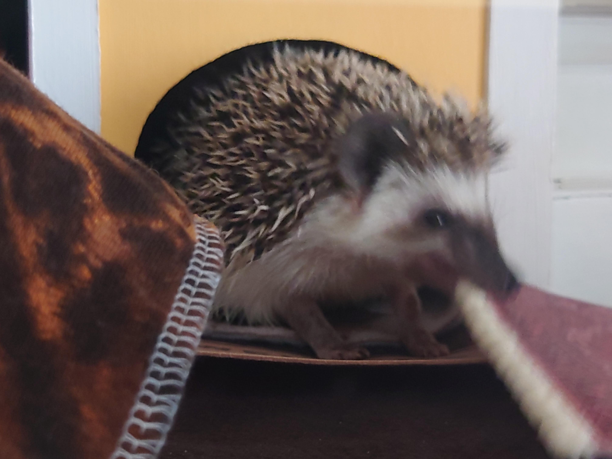
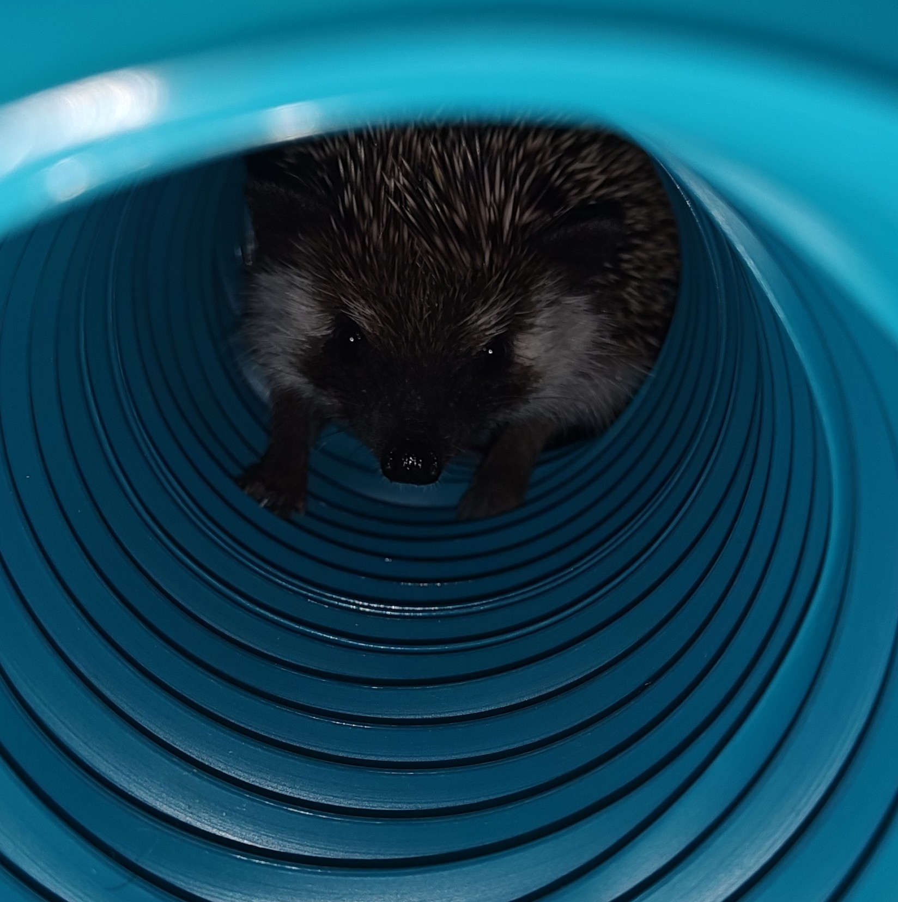

Siilien makuaisti
Siilit ovat käytännössä sokeita, ja tutkivat maailmaa pääasiassa maku- ja hajuaistinsa avulla. Tässä Möfmöf repii mattoaan.

Vaahdotus
Saadessaan hyvästä mausta kiinni, siilit luovat suussaan vaahtoa, jonka ne hierovat kielellään ympäri kehoaan. Tässä näkyy hyvin myös kuinka taipuisia siilit ovat.

Ahtaat paikat
Siilit myös rakastavat ahtaita paikkoja.